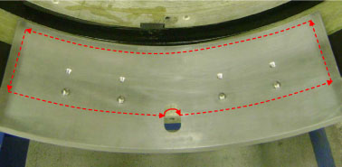
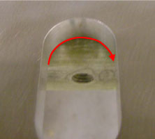
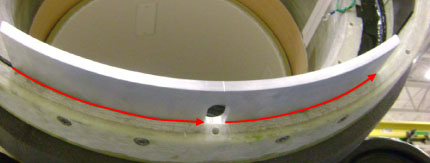
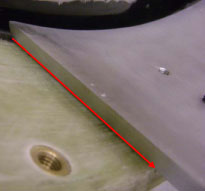
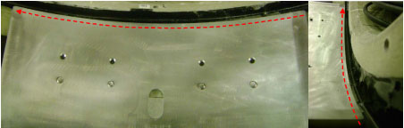
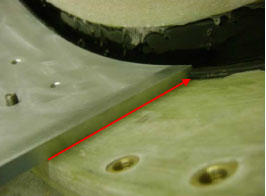

Illustration 6: Bracket Periphery Caulking Procedure

Illustration 7: Semi-circle Caulk Application

Illustration 8: Front Edge Caulk Application

Illustration 9: Left Edge Caulk Application

Illustration 10: Back Edge Caulk Application (Apply caulk to the bottom edge where the BRM bracket and gradient surface meet)

Illustration 11: Right Edge Caulk Application
